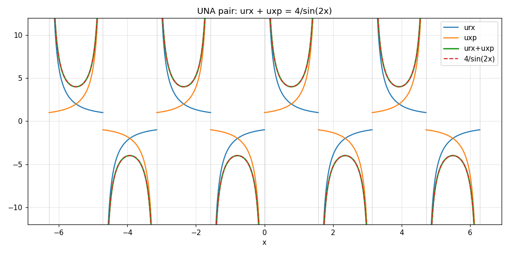
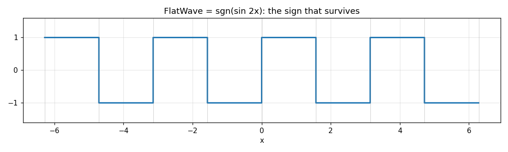
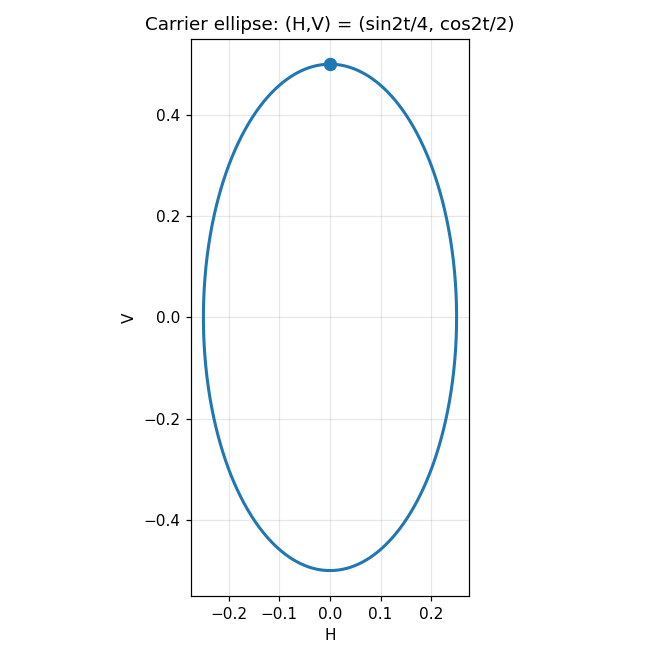
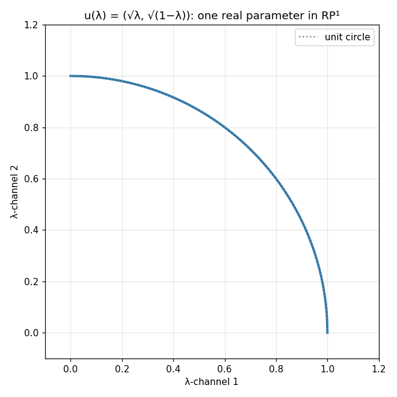
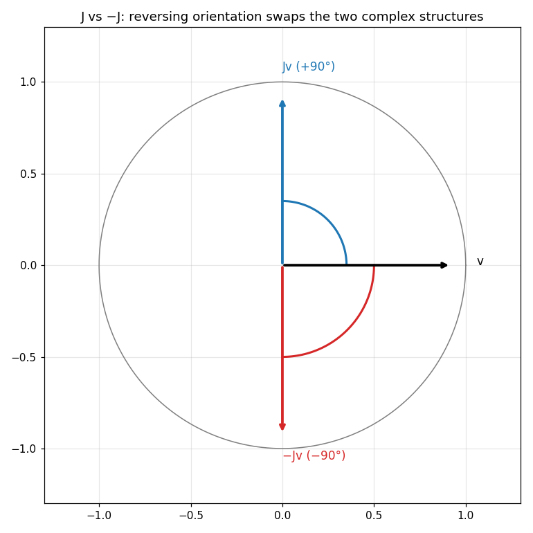
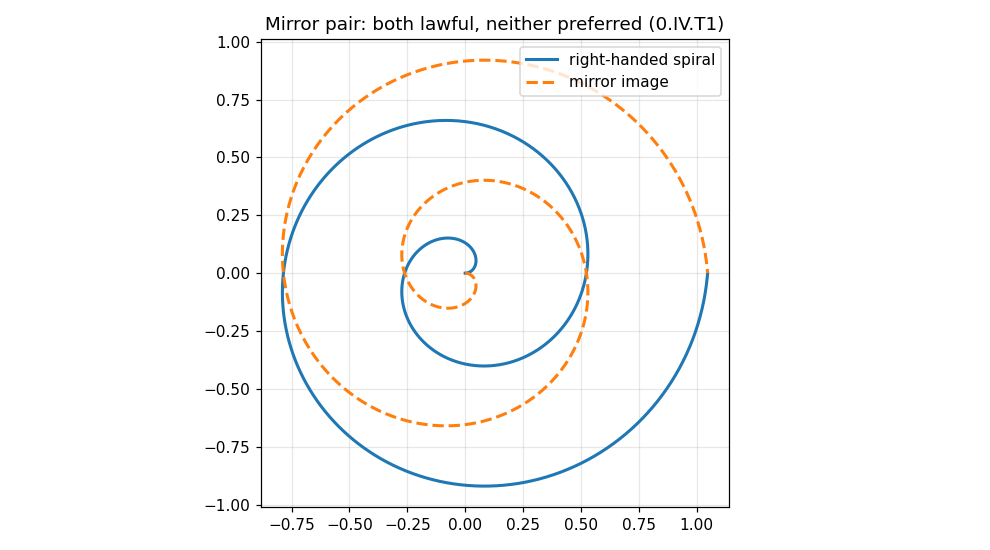

Book 0 — Source Boundary and the Orientation Question
A restructured rewrite of R Theory — Volume I, Book 0. Pictures first, then the audit.
About this rewrite. This is a restructuring of Book 0, not a new result. Every theorem,
ledger entry, and status label below comes from the original manuscript; no mathematics has been added.
What changed is the order of presentation:
Part I shows the mathematics — graphs first, intuition second, with each picture pointing
to the section that proves it. Part II runs the formal T0–T3 inheritance audit. Part III states the book's two orientation theorems. Part IV closes the book with the extension ledger.
Intuition is labeled as intuition. Theorems are labeled as theorems. Status tags
(CERTIFIED etc.) are preserved from the original.
Each graph below is a live Desmos calculator — drag, zoom, and trace it. If Desmos
can't load, a static image is shown instead, generated from the same formulas.
Figure 1. The four primitive operators on their domain
D = ℝ \ {kπ/2}. Seams (gray in the static image) at every multiple of π/2; everything stays
nonnegative; srx·sxp = 1 and cxp·crx = 1 pair them as
reciprocals; a quarter-turn swaps the pairs. Live in Desmos — zoom into a seam.
The whole theory begins with four real functions of one real variable:
cxp = |sec x| + tan x, crx = |sec x| − tan x = 1/cxp
The absolute values fold the cosecant and secant upward, so all four stay positive
wherever they're defined. The gray lines in the static image are the seams — the points
x = kπ/2 where the underlying trig functions blow up and the primitives
are undefined. Between seams, each primitive is smooth.
Three things to notice before any formalism: (1) the curves come in reciprocal pairs
that mirror each other across the line y = 1; (2) shifting by a
quarter-turn exchanges the sine-family with the cosine-family; (3) the picture is
π-periodic — nothing here knows about the half-turn. That last fact will matter.
CERTIFIEDFormal home: §10, Audit A, items A–B. Positivity, reciprocal identities, quadrant-local
smoothness, and reflection/quarter-turn laws are consequences of ordinary trigonometry —
no R-specific axiom, no physics import.
§2. One curve is enough
Four names, but how many independent generators? Fix one open quadrant and set
z = srx. From the single number z you recover
the quadrant's orientation sign ε = sgn(z−1) — above or below 1 —
and then the whole quartet, rationally:
Trace the blue curve in Figure 1 on any single interval between gray lines: its height
isz, and the other three curves on that interval are
algebraic shadows of it. The multiplicity of operator names is representational, not a
count of independent continuous generators.
The catch — visible in Figure 1 — is that this reconstruction is π-periodic.
Phase modulo 2π, a lifted phase, winding history: all invisible to the static quartet.
Recovering the half-turn needs additional discrete or historical information.
CERTIFIEDFormal home: §10, Audit A, item B (Local generator theorem). The generator also satisfies
z′ = −(1+z²)/2, so the rational function field it generates is closed
under differentiation — item C.
§3. The UNA pair and its conspiring sum

Figure 2. The UNA pair urx = srx − crx (blue),
uxp = cxp − sxp (orange), and their sum (green) landing exactly on
4/sin(2x) (red dashed) — the two curves coincide everywhere.
Live in Desmos.
Subtract across the families instead of within them:
urx = srx − crx, uxp = cxp − sxp
Each difference is a tangle of absolute values — but their sum collapses:
urx + uxp = 4/sin(2x)
Expand it and watch everything cancel: the absolute-valued envelopes annihilate, the
cotangents and tangents combine, and only 2(tan x + cot x) = 4/sin(2x)
remains. The green curve and the red dashed curve in Figure 2 are the same curve —
that's the identity, drawn.
CERTIFIEDSIGN FIXTUREFormal home: §10, Audit A, item D. The canonical convention is
uxp = cxp − sxp. A reversed label
uxp = sxp − cxp that propagated through part of the historical
Trig2 workbook was a transcription error, not an alternative convention; it is retired.
The expansion |sec x| + tan x − 1/(|csc x| + cot x) fixes the sign
directly. No normalization quarantine is required on account of it.
§4. The sign that survives

Figure 3.FlatWave = 1/urx + 1/uxp = sgn(sin 2x):
a square wave flipping every quarter-turn. Live in Desmos.
From the UNA pair, form 1/urx + 1/uxp. The algebra gives
(urx+uxp)/(urx·uxp) = sgn(sin 2x) — a pure sign, ±1, with all
magnitude washed out. Figure 3 is that sign.
Read its symmetries off the graph: it reverses every quarter-turn (cophase),
repeats every half-turn, and is blind to the 2π deck shift
(FW(θ+2π) = FW(θ) exactly). This little square wave is the book's
running example of orientation represented: it faithfully records relative orientation,
and it will be carefully distinguished — in §15–16 — from things it is not: not a deck
character, not a spin-lift sign, not a physical chirality.
CERTIFIEDFormal home: §10, Audit A (FlatWave layer); transformation laws verified independently
(§15–16 use them). The deck-blindness, cophase reversal, and half-turn invariance are exact
identities of sgn(sin 2x).
§5. A smooth ellipse through the seams

Figure 4. The harmonic carrier (H,V) =
(sin 2t/4, cos 2t/2), a smooth closed ellipse. The primitives blow up at their seams;
the carrier sails through. Live in Desmos — drag t.
Invert the UNA sum: H = 1/(urx+uxp) = sin(2x)/4, and set
V = H′ = cos(2x)/2. Then V² + 4H² = 1/4 —
an ellipse, drawn in Figure 4. Two contrasts with everything before it:
First, smoothness: the primitives in Figure 1 explode at every gray seam, but
the carrier is smooth across all of them. Smooth continuation does not assign finite values
to the primitive poles — it sidesteps them into a new pair of coordinates.
Second, topology: the ellipse is a circle. No single real scalar can parametrize a
circle both continuously and injectively — that's why the carrier needs the pair(H,V), or an atlas of at least two charts. One generator gave us the
algebra; the circle forces the representation to double. No second intrinsic degree of
freedom is created — just the honest bookkeeping a loop demands.
CERTIFIEDFormal home: §10, Audit A, item E. Carrier extraction, ellipse identity, smooth seam
extension, and the scalar topological obstruction (no continuous injective
S¹ → ℝ) are ordinary mathematics.
§6. One parameter is not two

Figure 5.u(λ) = (√λ, √(1−λ)): one real parameter
tracing a quarter-circle inside a two-dimensional state space. Live in Desmos.
Now a picture of a negative result — what you can't get. The curve
u(λ) = (√λ, √(1−λ)) lives in a two-dimensional space but is
intrinsically one-dimensional: it can't cover the disc, let alone the complex projective
line ℂP¹ (two real dimensions). Want the full complex state?
You must add an independent phase φ:
ψ(λ,φ) = (√λ, e^{iφ}√(1−λ)) — and that addition is an explicit
extension, not a theorem squeezed from the one-parameter curve.
This is the book's rank firewall in miniature: display dimension is not intrinsic
rank. A one-parameter state mapped into a big space traces at most a one-dimensional
image. Readout complexity, output multiplicity, relabeling — none of them manufacture a
missing independent degree of freedom. When a target needs more rank than the source has,
the lawful moves are: restrict the target, extend the source explicitly, import the
structure with its provenance recorded, or leave the gap open. There is no fifth route.
CERTIFIEDFormal home: §11, Audit B, items E (differential rank firewall:
rank(dŷ) ≤ min(rank dΦ, rank dE, rank dΓ)), H (complex-state rank
obstruction), I (extension certificates).
§7. J versus −J: orientation you can point at

Figure 6. The exchange operator J rotates
v → Jv by +90° (blue); −J rotates by
−90° (red). Both satisfy J² = −I. Reversing the plane's
orientation swaps them. Live in Desmos.
The scalar Riccati flow lifts to a two-component real linear system, and on that plane
sits an exact complex structure: J² = −I. Figure 6 shows what
it does — a quarter-turn. And here is the whole orientation question in one picture:
Representation is free. The algebra carries both J and
−J; mirror reversal is exactly represented; nothing is
mathematically missing. The old worry — that the formalism can't carry handedness —
is retired right here.
Preference is absent. Declare an oriented plane and exactly one orthogonal complex
structure is compatible with it; reverse the orientation and J ↔ −J.
But nothing in the inherited structure picks one. The two are related by an
automorphism of the unoriented data. That gap — between can represent and
does select — is what §15 and §16 make precise.
Note also what J does not do: it doesn't create an
independently variable phase (that's Figure 5's lesson again — a complex structure is
algebra, not a new coordinate).
CERTIFIEDFormal home: §12, Audit C, items A–B. Real projective lift, J²=−I,
conjugacy classification, orientation-relative uniqueness of the orthogonal complex
structure. The J/phase distinction is item A; the representation
result is item B.
§8. The orientation question in one picture

Figure 7. A mirror pair: both spirals satisfy every equation in the
inherited corpus; no internal measurement prefers one. Live in Desmos.
Figure 7 is the book's central question, drawn with spirals instead of equations.
Two mirror realizations. Both lawful. The metric, the incidence identities, the
transformation laws — all preserved under consistent sign transport. Now ask: which
one is preferred?
The answer the audit earns, in two steps. First (§15): the framework represents
orientation (Figures 3, 6, 7 all show it) but derives no preference — the two
members of each mirror pair sit on exactly equal footing. Second (§16): this isn't an
accident of the examples. Whenever an orientation-reversing automorphism with no fixed
orientation exists, no intrinsic rule can canonically select one orientation —
the proof is four lines.
Crucially, this is a bounded result. It doesn't say nature can't prefer a
handedness, and it doesn't say mathematics can never select one. It says: this
structure, with its symmetries, doesn't — and here's exactly what you'd have to
add to change that (§17).
CERTIFIEDFormal home: §15 (Theorem 0.III.T1) and §16 (Theorem 0.IV.T1), with the symmetry
inventory of §14 keeping the distinct transformations in Figure 7's family
(frame reversal, cell reorientation, J ↔ −J, central-sign loss)
from being conflated.
Part II — Then earn it: the audit
Part I showed the mathematics. Part II checks the provenance: which claims are inherited,
from where, and with what status. The governing rule admits the historical T0–T3 corpus
claim by claim, only with the status actually earned — never by title, chronology, or
prior use. Standard background mathematics stays available as inherited mathematics.
§9. What we're allowed to use
GOVERNING SOURCE RULE
Book 0 admits T0–T3 as the sole inherited Projection Craft source corpus. Physical
frameworks used inside T2 or T3 do not enter the revised core merely because the
source essays used them — they remain provenance-bearing imports. No result from T4 onward,
the S essays, loose papers, spreadsheets, or prior exploratory discussion is a premise of
Book 0. The inherited mathematical background (M0) is ordinary real analysis, trigonometry,
and elementary topology: no R-specific axiom.
§10. Audit A — the scalar kernel (T0 → M1)
What survives, item by item:
A. Primitive reciprocal kernel. The four definitions of §1, positivity,
srx·sxp = cxp·crx = 1, quadrant-local smoothness, reflection and
quarter-turn laws — ordinary trigonometry.
B. Local generator theorem. §2's one-generator reconstruction
z = srx, ε = sgn(z−1), rational quartet
recovery — with the π-periodicity limit: no half-turn branch from static data.
C. Differential closure.z′ = −(1+z²)/2; the rational
function field KQ = ℝ(z) is closed under
d/dx. A mathematical phase derivative, not a physical time law.
D. UNA sign audit — conflict resolved. Canonical
uxp = cxp − sxp; the reversed label was transcription error
(see §3). Then urx + uxp = 4/sin(2x) follows with no chartwise
sign choice, and H = sin(2x)/4 extends smoothly to ℝ.
E. Harmonic carrier. §5's ellipse V² + 4H² = 1/4,
smooth through seams, homeomorphic to S¹ — hence no single
scalar parametrizes it continuously and injectively.
F. Reciprocal-even normalization.ED = 1/(srx+sxp+cxp+crx) = |sin 2x|/(4(|sin x|+|cos x|))
carries no continuous information beyond |H|; normalized
primitives give a positive partition of unity — algebra, not probability.
G. Product and logarithmic representations.P = cxp·srx, y = ln P are
reparameterizations; hyperbolic functions arise exactly after the log change. No physical
rapidity or Lorentz kinematics is established.
H. Bounded transfer, reciprocal-odds atlas, and the minimal signed scalar (T0.III).
The auxiliary pair completes to the transfer circle
p² + q² = 2; the bounded coordinate
λ = (1−p)/2 satisfies
0 < λ < 1 with complement
λ̄ = 1 − λ. Reciprocal access
Rλ = 1/λ,
Uλ = 1/(1−λ); reciprocal odds
Ω = λ/(1−λ), χ = (1−λ)/λ with
Ωχ = 1 and the displaced-access hyperbola
χ = Rλ − 1,
Ω = Uλ − 1. The cross-layer ratio
Ω = λ/(1−λ) = sawr/sawx = uxp/urx = cxp/srx
is one projective coordinate in several presentations (T0.III.T8; the UNA-envelope
equalities rest on T0.II as the essay states). Differentially:
λ′ = q/2, the affine harmonic equation
λ″ + λ = 1/2, the exact first integral
(1−2λ)² + 4(λ′)² = 2, and the sharp phase-rate bounds
1/2 < λ′ ≤ 1/√2, the upper bound attained exactly at the
unique midpoint inflection λ = 1/2, where
Ω = χ = 1. Equal-and-opposite saw derivatives
sawr′ + sawx′ = 0 — a definitional
consequence, not a conservation law (T0.III.N2); the rate bounds are properties of the
x-coordinate, and the harmonic identity is not an equation of motion (T0.III.N3).
The signed scalar ζ = sawr satisfies
ζ ∈ (−1,0) ∪ (0,1) with
ε = sgn ζ and λ = |ζ|, and
reconstructs the complete named static calculus modulo π (T0.III.T28); a half-turn
branch datum is required for 2π, and no value of ζ extends continuously through a
primitive seam (T0.III.C31; T0.III.N5: static sufficiency supplies no seam-crossing
law). No probability law, no physical conservation, no equation of motion, no
Projection-specific axiom: T0.III.T30 certifies axiom-free closure of the layer.
The internal identities were re-derived independently (13 symbolic and 9 numerical
checks — all pass); the UNA-envelope equalities of T8 and the primitive
reconstruction formulas are inherited from T0.II as the essay states.
I. Projection boundary. T0 contains zero physics imports, zero empirical
calibrations, zero instantiated projection contracts, zero R-specific axioms. Later
physical claims must factor visibly as external instance → inferred internal state →
evaluated internal structure → external readout, with units and calibration supplied
from outside the core.
T0 INHERITANCE LEDGER
CERTIFIED: primitive definitions and absolute values; reciprocal identities and positivity;
chart/domain structure; primitive symmetry actions; canonical UNA definitions;
urx + uxp = 4/sin(2x); half-turn information loss; one-generator Möbius reconstruction;
Riccati generator law; quadrant-local differential-field closure; bounded transfer atlas
and reciprocal odds; differential transfer closure with sharp rate bounds; minimal signed
scalar and seam-obstruction results; axiom-free closure of the bounded transfer layer;
local vs global representation distinction; harmonic carrier extraction; carrier ellipse and scalar
topological obstruction; reciprocal-even kernel formulas; representation/information-loss
theorems; projection-boundary/airlock distinction.
UNA SIGN DISPOSITION: reversed uxp = sxp − cxp retired as transcription error.
PHYSICS IMPORT COUNT FOR T0: 0. R-SPECIFIC MATHEMATICAL AXIOM COUNT FOR T0: 0.
UNRESOLVED NORMALIZATION CONFLICTS: 0.
§11. Audit B — the Projection firewall (T1 → M2)
T1 adds no physical layer. It formalizes the boundary between the structural calculus and
any external interpretation:
A. Projection architecture. Every claim factorizes as
ŷ = Γ ∘ E ∘ Φ (inference → internal evaluation → readout).
External declarations don't retroactively become theorems; a coordinate change exactly
compensated by the readout adds no empirical content.
B. Candidate discipline. Ansatz ≠ admissible candidate; uniqueness-in-class ≠
necessity; obstruction-of-a-family ≠ impossibility. Every no-go theorem must declare its
candidate universe, admissibility, provenance, equivalence relation, and — for global
claims — an exhaustiveness argument. One lawful counterexample defeats a uniqueness claim;
failure to find one proves nothing.
C. Observation grammar. Complete records, calibration, uncertainty, frozen
versions — the slots, not the fillings. Structural–dimensional nonidentity: a
dimensionless output doesn't become time or energy by renaming. Calibration ≠ validation.
D. Orientation at the readout boundary. In the affine family
y = αz + β, the sign σ = sgn(α) is
representable and identifiable under orientation-sensitive information — but this is a
readout-identifiability result, not a physical chirality law. T1 rules out only the
overclaim that the framework cannot carry an orientation sign.
E. Differential rank firewall. §6's picture, formally:
rank(dŷ) ≤ min(rank dΦ, rank dE, rank dΓ). The readout cannot
manufacture intrinsic rank.
F. Coframe/metric obstruction. One-forms ea =
fa(x)dx span at most rank one; wedges vanish; no nondegenerate
four-coframe from the scalar family alone. Exact and limited: it proves additional
structure must be supplied, not that higher rank is impossible.
G. Fixed-generator curvature obstruction.ω = K dη ⇒ dω + ω∧ω = 0 locally — scalar variation along one
fixed generator is not curvature.
H. Complex-state rank obstruction.J² = −I is algebra,
not a new phase variable (§6–7). u(λ) can't cover
ℂP¹; ψ(λ,φ) is an explicit extension —
a rank-completion example, not quantum mechanics.
I. Extension certificates. "More structure is needed" becomes an auditable
choice: restrict the target, extend the source explicitly, import with provenance, or
leave the gap open. Readout complexity is not a fifth route.
T1 INHERITANCE LEDGER
CERTIFIED AS M2 FORMAL FRAMEWORK: Projection factorization; contract and provenance
grammar; prediction and operational equivalence; candidate-class and necessity discipline;
information-loss rules; observation and joining grammar; structural–dimensional nonidentity;
units/origin/orientation as readout fields; calibration-versus-validation separation;
identifiability and gauge compensation; detectability and falsifiability definitions;
differential rank factorization; scalar image-rank bound; coframe and metric rank
obstruction; fixed-generator local-flatness result; algebraic-complex-structure versus
independent-phase distinction; extension-certificate logic.
CANDIDATE-CLASS RESULTS, NOT UNIVERSAL LAWS: scalar and vector affine readouts; anchor
designs; regularization rules; score functions; penalties; adequacy predicates.
NOT INHERITED AS PHYSICAL CONTENT: any concrete Φ or Γ; any external system or measurand;
any unit, scale, anchor, dataset, or probability law; any physical clock, spacetime
dimension, coframe, gauge or gravitational field; any quantum interpretation; any physical
handedness; any empirical validation.
PHYSICS IMPORT COUNT FOR T1: 0. R-SPECIFIC MATHEMATICAL AXIOM COUNT FOR T1: 0.
EXTERNAL DATA COUNT FOR T1: 0. NUMERICAL BRIDGE CALIBRATION COUNT FOR T1: 0.
Second audit conclusion. M2 is the Projection, observation, readout, and rank
firewall — not the place where physical orientation is obtained. No Orientation Axiom is
warranted at the T1 stage; T1 alone proves no global no-preference theorem for physical
chirality. The question passes to T2: does the internal algebra select a handedness?
§12. Audit C — orientation representation (T2 → M3)
A. Real lift, rank intact. The Riccati flow lifts to a homogeneous two-component
real linear system; quotiented by scale it lives in ℝP¹ — one real
degree of freedom, the T1 rank theorem undefeated. Inside it, J² =
−I: an exact complex structure, but no independently variable phase (§7).
B. Internal orientation is representable. Once an oriented Euclidean two-plane
is declared, exactly one orthogonal complex structure is compatible; reversing orientation
sends J ↔ −J (Figure 6). The "formalism can't carry
orientation" worry is retired. What is not supplied: a theorem privileging
J over −J before orientation data are
declared.
C. Seam, Pin, and central-lift nonselection. The local data don't force a unique
folded seam law (J, −J, reflections all
lawful). The real D4 skeleton and complex Q8 lift can share one projective quotient —
projective/quadratic readouts cannot recover the missing central ±. An obstruction to
selecting a lift, not to representing one.
D. Clifford and signature discipline.M₂(ℝ) admits
multiple Clifford presentations; signature lives in the declared quadratic form and
grading, not in the matrix algebra. Pauli completion is a representation theorem, not a
physical-spin theorem.
E. Composition and control. Tensor products, Hamiltonian expressibility, Lie
closure, tomography — exact relative to their declared extensions; they add representation
and control possibilities, no chirality selector. A preferred handedness would still need
a declared physical dynamics, boundary condition, or orientation-sensitive observable.
T2 INHERITANCE DISPOSITION
CERTIFIED AS DERIVED REPRESENTATION MATHEMATICS: real projective Riccati lift; projective
rank-one status; J² = −I; real matrix closure; conjugacy classification of real 2D complex
structures; orientation-relative uniqueness of the orthogonal complex structure; exact
Clifford identities after a presentation is declared; bilinear and reflection theorems;
information-loss and central-sign obstructions.
RETAINED AS EXPLICIT EXTENSIONS OR PRESENTATION DATA: ordered oriented channel plane;
Clifford embedding and grading; complex scalar extension; independent phase φ; C²/CP¹
completion; tensor-product composition; control/detector parameter spaces; seam
representatives.
NOT INHERITED AS PHYSICAL CONTENT: physical qubit or spin ontology; Born probabilities;
physical subsystem independence; physical time; action scale; microscopic Hamiltonian;
laboratory controls; noise model; causal interpretation; physical Pin/Spin structure;
physical chirality; empirical quantum mechanics; calibration or validation results.
PHYSICS IMPORT COUNT INTO REVISED M3: 0. R-SPECIFIC AXIOM COUNT ADDED: 0.
PHYSICAL HANDEDNESS SELECTION: absent.
Third audit conclusion. M3 is frozen as an algebraic representation layer with
explicit internal orientation machinery. T2 defeats both the claim that a new axiom is
needed to represent handedness and the opposite overclaim that J,
a Clifford presentation, or a Pin candidate selects nature's handedness. Surviving
statement: representation without selection.
§13. Audit D — the geometric carrier (T3 → M4)
A. Tetrahedral carrier and spatial rank. From Euclidean affine 3-space, three
mutually adjacent tetrahedral edge directions give
G = ℓ²[[1,½,½],[½,1,½],[½,½,1]],
det G = ℓ⁶/2 > 0 — rank three, lawfully resolving the T1
spatial-rank obstruction by adding independent geometric data. Oblique coordinates
are linear changes of basis: coordinate choice alone generates no new physics.
B. Geometric orientation: representable, not preferred. The carrier's
isometry group O(G) contains orientation-reversing maps;
oriented frames and cross products use a declared volume form. Handed frames exist and are
distinguishable once an orientation is declared; the metric privileges none
(Figure 7).
C. Oriented complexes and incidence closure. Declared oriented simplicial
refinement with D₁D₀ = 0, D₂D₁ = 0 —
orientation-consistent combinatorics; coherent under reorientation, selecting nothing.
D. Coframe, determinant, Hodge. Standard machinery once manifold, metric,
orientation, and bundle data are declared. The Hodge star needs an orientation convention;
historical T3's physical time, Lorentzian signature, Maxwell assignments, and
Einstein–Maxwell action are stripped — deferred to the physics interface.
E. Obstruction ledger. One scalar can't generate a rank-four coframe; coordinate
changes generate no new physics; no lattice is retained as preferred physical substrate;
incidence closure doesn't determine a Hodge map; a lattice doesn't determine its update
law; physical time is not supplied by the spatial carrier.
T3 INHERITANCE DISPOSITION
CERTIFIED AS REVISED M4 MATHEMATICS: tetrahedral basis and Gram geometry; rank-three
carrier theorem; continuous coordinate equivalence; reciprocal-basis and metric machinery;
oriented volume and cross-product representation; primal/dual incidence architecture;
D₁D₀ = 0 and D₂D₁ = 0; discrete-form sign discipline; triad/coframe rank and
nondegeneracy criteria; connection, torsion, curvature, holonomy, Hodge constructions
when their geometric data are declared; obstruction/continuum ledgers.
RETAINED AS DECLARED EXTENSIONS OR GEOMETRIC DATA: the tetrahedral carrier itself;
discrete center lattice; simplicial refinement; dual complex; finite Hodge or mass
matrices; variable triad; temporal covector (as pure coframe data); edge coframes; face
holonomies.
NOT INHERITED AS PHYSICAL CONTENT: Newtonian time, mass laws, force/Poisson laws,
charge/current, ε₀, μ₀, c, G, Maxwell dynamics, Lorentzian signature as fact about
nature, Einstein–Hilbert/Maxwell dynamics, lattice-as-vacuum claims, empirical deviations.
PHYSICS IMPORT COUNT INTO REVISED M4: 0. R-SPECIFIC AXIOM COUNT ADDED: 0.
PREFERRED PHYSICAL HANDEDNESS SELECTION: absent.
Fourth audit conclusion. M4 is frozen as the geometric carrier layer. The
orientation question survives the complete T0–T3 audit only in the narrowed form of
preference rather than representation.
§14. Symmetry inventory
The inherited corpus contains distinct transformations that must not be conflated:
scalar sign reversal, reciprocal exchange, phase reflection, quarter-turn and half-turn
maps, projective sign loss, J ↔ −J under orientation reversal,
reflection and Pin representatives, reversal of an oriented Euclidean frame, reversal of
cell orientation, and changes of coframe orientation. Some are presentation changes; some
alter orientation-sensitive quantities; some are invisible after projective or quadratic
quotient; some need global gluing data. None, by itself, is a theorem of physical
parity violation.
AUDIT RULE
An orientation-sensitive sign is structural when the state space or geometric object
retains it; a convention when all invariant content is unchanged by simultaneous
reorientation; physical only after a P0 observable contract and a P1–P3
law/source/calibration record make the two alternatives operationally distinguishable.
Candidate universe. The mathematical structures admitted by revised M0–M4, with
their declared domains, extension statuses, and the orientation-reversing transformations
explicitly available in T0–T3.
Within this candidate universe: (1) orientation can be represented internally; (2)
mirror-related or oppositely oriented realizations are mathematically admissible; (3) T2
supplies the pair J and −J when the
underlying two-plane orientation is reversed; (4) T3 supplies oppositely oriented frames
and cell complexes while preserving the metric and incidence identities under consistent
sign transport; (5) projective or quadratic quotients may erase a central sign rather than
select it; (6) no inherited theorem assigns one member of the orientation-reversed pair a
privileged physical status.
Therefore revised M0–M4 represent orientation but do not derive a preferred physical
chirality.
Proof sketch. T1 shows orientation is representable at a readout boundary when
orientation-sensitive information is retained. T2 makes it internal: reversing the declared
oriented channel plane sends J → −J, while local/projective seam
data choose no unique central lift. T3 makes it geometric: reversing an ordered frame or
cell orientation changes the orientation-sensitive signs while the metric, rank, and
boundary-of-boundary identities stay lawful. The complete T2/T3 closure ledgers contain no
physical selection rule breaking these paired realizations. Representation present;
preference not derived. ∎
Corollary 0.III.C1 — No Orientation Axiom required for representation. No new
axiom is needed to define handedness, mirror reversal, oriented frames or cells, or
spinorial/projective lift candidates.
Corollary 0.III.C2 — Physical chirality remains a physics-interface problem. A
later parity-violating interaction, chirality-sensitive observable, oriented source,
boundary condition, or preparation law may lawfully distinguish the alternatives — entering
through the physics interface with provenance visible. The no-preference theorem does not
forbid parity violation in nature.
Corollary 0.III.C3 — Candidate-boundary warning. Not a universal claim that no
extension could ever select an orientation — only that the inherited T0–T3 framework, as
audited and without hidden later premises, does not.
§16. Automorphism Obstruction to Canonical Orientation
Theorem 0.IV.T1 — Automorphism Obstruction to Canonical Orientation
Let U be an unoriented mathematical structure admitted by
revised M0–M4, and Or(U) = {o₊, o₋} its two possible orientations.
Suppose an automorphism r ∈ Aut(U) exchanges the orientations
with no fixed orientation: r·o₊ = o₋,
r·o₋ = o₊.
A canonical selector from U alone would be a rule
C with C(U) ∈ Or(U), natural under
automorphisms: C(U) = g·C(U) for every
g ∈ Aut(U), since g maps
U to the same underlying structure.
Taking g = r: C(U) = r·C(U). But
r has no fixed point on Or(U), so
r·C(U) ≠ C(U) — contradiction.
Hence an unoriented structure admitting an orientation-reversing automorphism cannot
canonically select one of its two orientations from its orientation-symmetric data
alone. ∎
Application to T2. For the unoriented Euclidean two-channel plane, a reflection
exchanges the orientations; after one is declared the compatible complex structure is
J, and reversal sends J ↔ −J (Figure 6).
Candidate central lifts can share one projective quotient, so quotient data can't restore
the missing preferred sign.
Application to T3. For the tetrahedral metric carrier, O(G)
contains orientation-reversing isometries; reversing an ordered frame changes the
orientation sign while preserving the Gram metric. Consistent reorientation changes
incidence/cochain signs but preserves the boundary-of-boundary identities (Figure 7).
Corollary 0.IV.C1 — Exact scope. The obstruction applies only when the selector
must be intrinsic to the orientation-symmetric inherited structure — not after additional
orientation-breaking data are supplied.
Corollary 0.IV.C2 — Orientation-sensitive quantities don't defeat it.
FlatWave signs, pseudoscalars, cross products, oriented volumes, J,
axial quantities, oriented cochains may transform oddly under reversal — that proves
orientation is represented, not preferred.
Corollary 0.IV.C3 — No universal impossibility claim. The theorem doesn't say
mathematics can never select chirality — only that a symmetric structure can't canonically
break its own exact orientation-reversal symmetry without additional asymmetric structure,
a restricted candidate domain, a boundary/source condition, or a non-invariant physical
law.
Obstruction disposition. REPRESENTATION OBSTRUCTION: retired.
CANONICAL-PREFERENCE OBSTRUCTION FOR ORIENTATION-SYMMETRIC M0–M4 STRUCTURES: proved.
PHYSICAL PARITY-VIOLATION QUESTION: deferred to the physics interface.
Part IV — Close the book
§17. Minimal extension, only if necessary
No new mathematical axiom is required at Book 0 closure.
For purely mathematical work needing a definite orientation, the minimal addition is a
declared orientation convention o ∈ {+1,−1} plus an explicit
statement of how orientation-sensitive objects transform when o
is reversed. That datum is ordinary convention — not a law selecting nature's handedness.
For a later physical theory claiming a preferred chirality, a sign convention is
insufficient. The smallest admissible physical addition must contain an
orientation-breaking empirical or dynamical statement whose mirror alternatives are
operationally distinguishable, filed in one or more of:
P0 — a chirality-sensitive observable or preparation/readout contract;
P1 — a parity-violating interaction, action term, constitutive law, or dynamical
principle;
P2 — an oriented source, initial condition, boundary condition, or
state-preparation datum;
P3 — any dimensional scale, coupling, or calibration needed to compare the
chirality-sensitive prediction with measurement.
The later theory must then prove which conclusions follow from that smallest added item —
and may not relabel the orientation convention o as a physical
law.
Minimal-extension verdict. ADDED R-SPECIFIC MATHEMATICAL AXIOM:
none. MATHEMATICAL ORIENTATION DATUM WHEN NEEDED: ordinary convention/structure, not a new
law. PHYSICAL CHIRALITY IMPORT: deferred; none selected in Book 0.
M2 — T1 Projection/readout/rank firewall: factorization, candidate and necessity
discipline, observation grammar, dimensional and calibration separation, information-loss
and differential-rank theorems, obstruction certificates, extension discipline.
M3 — T2 algebraic/orientation-representation layer: real projective lift and
complex structure; orientation-relative J; Clifford, reflection,
bilinear, Pin/central-lift, complex, tensor, and control constructions with
declaration/extension status preserved; no inherited quantum or physical ontology.
M4 — T3 geometric carrier layer: tetrahedral Gram geometry and rank; coordinate
equivalence; orientation, volume, cross-product, incidence, coframe-rank, connection,
curvature, holonomy, Hodge mathematics with extensions explicit; no inherited Newtonian,
Maxwell, Einstein, or other physical law.
M5 — decadic carrier airlock layer (forward-looking): M4 plus Axiom 0, applied
to the earned rank-five real carrier U = E ⊕ V. Axiom 0 requires
a tagged independent real partner with U ∩ iU = {0} and
W = U ⊕ iU; the primitive lift of an upstream operator
A is diagonal A ⊕ ιAι⁻¹ (no off-diagonal
mixing is primitive). The closure operator I(u,v) = (−v,u), the
complexification W ≅ U ⊗ℝ ℂ, and
dimℝW = 10,
dimℂW = 5 are derived consequences, not additional
axioms. M5 inherits no Spin(10), chirality selector, gauge groups, or empirical
calibration — those enter later as theorems or explicit imports.
Newly proved or resolved in this book. (1) The reversed
uxp = sxp − cxp wording is transcription error; canonical
uxp = cxp − sxp restored with no normalization branch. (2) T1's
orientation result is readout-identifiability, not a chirality law. (3) T2 supplies genuine
internal orientation representation and mirror/lift structure. (4) T2 selects no unique
seam lift, Clifford signature, spin ontology, Hamiltonian, or preferred handedness. (5)
T3 supplies independent spatial rank and genuine oriented geometric structures. (6) T3
makes the tetrahedral carrier neither physically fundamental nor orientationally
preferred. (7) The Representation–Preference Separation Theorem. (8) The Automorphism
Obstruction to Canonical Orientation.
ADDED-AXIOM LEDGER
R-specific mathematical axioms added in Book 0: 0.
Orientation axioms added in Book 0: 0.
Physics imports from historical T0–T3 admitted into revised M0–M4: 0.
Empirical calibrations admitted into the revised M0–M4 formal spine: 0.
OPEN PHYSICAL-DEBT LEDGER (not defects — unanswered physical questions, kept outside
the inherited core until explicitly imported or derived):
physical time and clock realization; physical state ontology and probability law;
physical dynamics and action principles; physical metric signature and spacetime
interpretation; physical electromagnetic and gravitational laws; physical spin and
fermion interpretation; physical parity violation and chirality selection;
dimensional constants and calibration; any empirical claim distinguishing the theory
from a coordinate or representation change.
Theorem 0.VI.T1 — Book 0 Closure
Under the revised source boundary, T0–T3 suffice to establish a coherent formal core
with scalar, projective, algebraic, orientation, rank, and geometric machinery while
maintaining zero inherited physical law. The inherited core can represent orientation but
cannot canonically prefer one orientation wherever orientation reversal remains an
automorphism of the admitted structure. Therefore Book 0 closes with no added
Orientation Axiom and no hidden physics import. The next lawful dependency step is to
reconstruct Books 1–3 from frozen M0–M4, normalizing the mathematics and symmetry
structure before any physical interface is opened. ∎
BOOK 0 FINAL STATUS
FORMAL INHERITANCE AUDIT: complete.
M0–M4: frozen.
ORIENTATION REPRESENTATION: solved.
CANONICAL PREFERENCE FROM ORIENTATION-SYMMETRIC FORMAL STRUCTURE: obstructed.
PREFERRED PHYSICAL CHIRALITY: unresolved and deferred to physics.
ADDED MATHEMATICAL AXIOMS: 0.
PHYSICS IMPORTS INTO FORMAL CORE: 0.